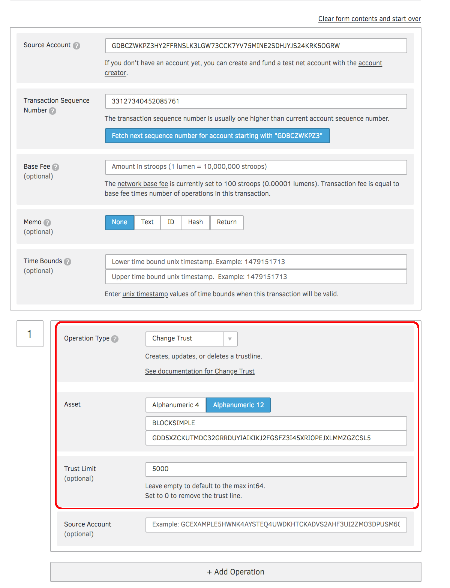
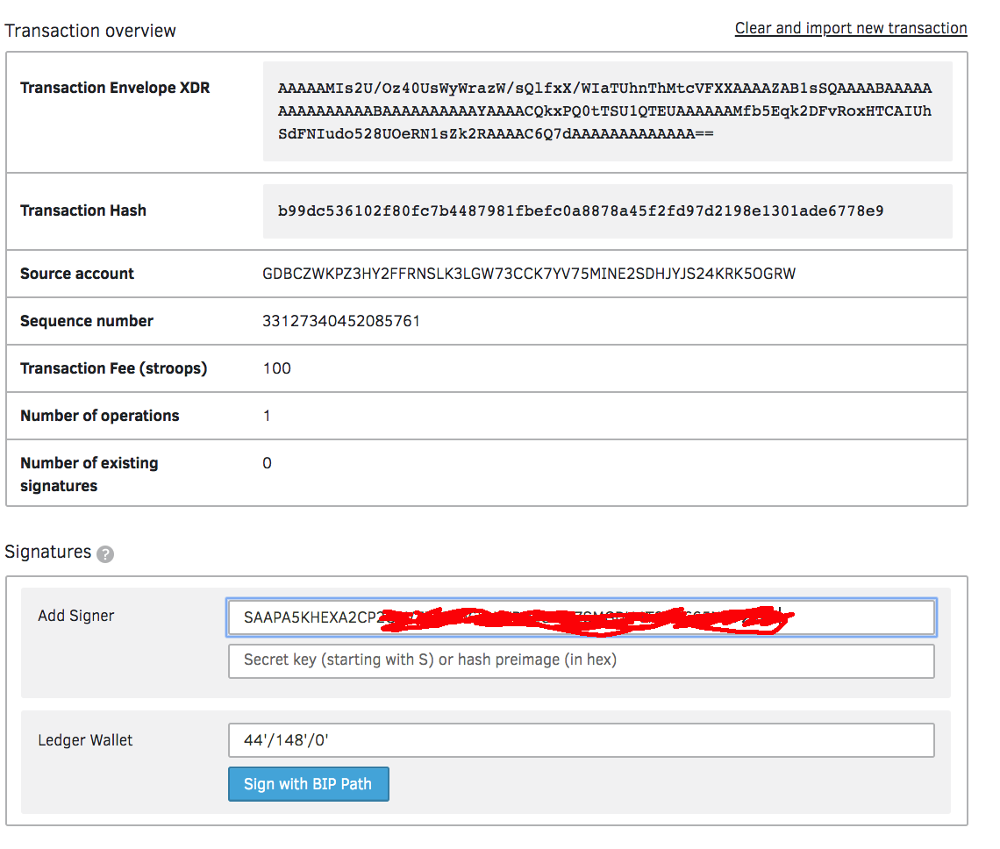
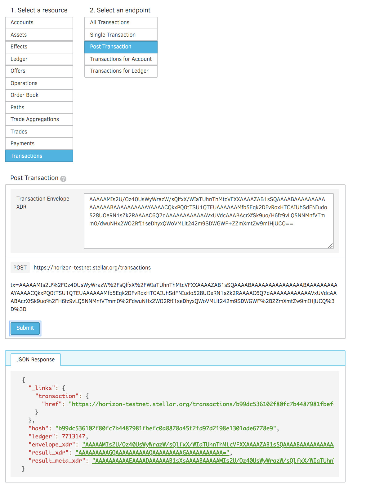
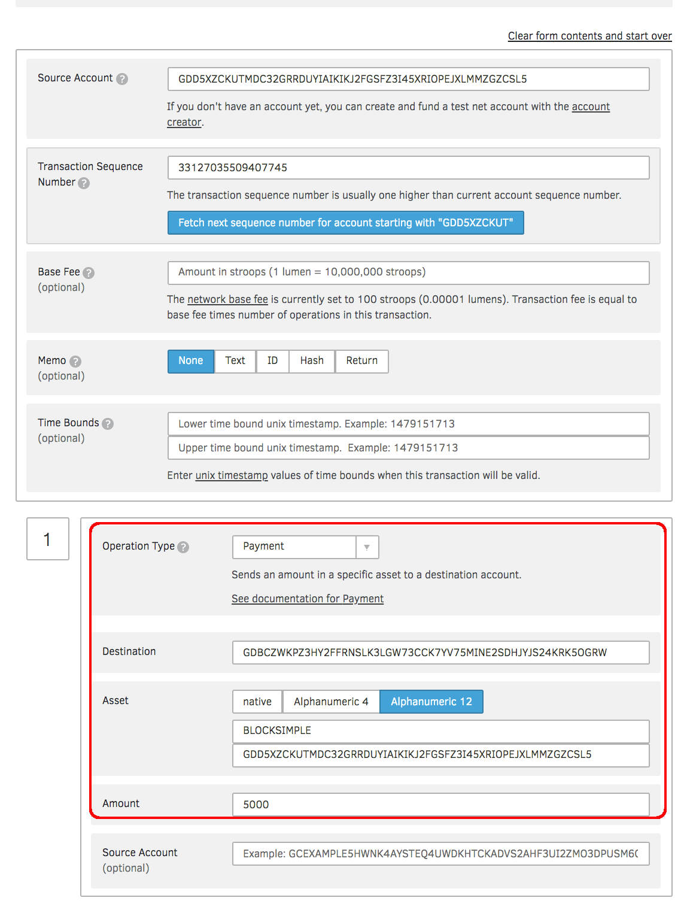
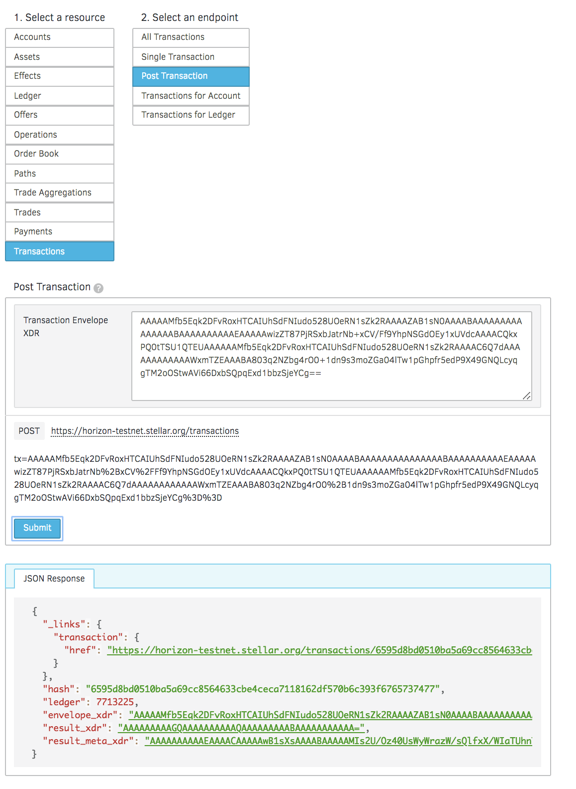
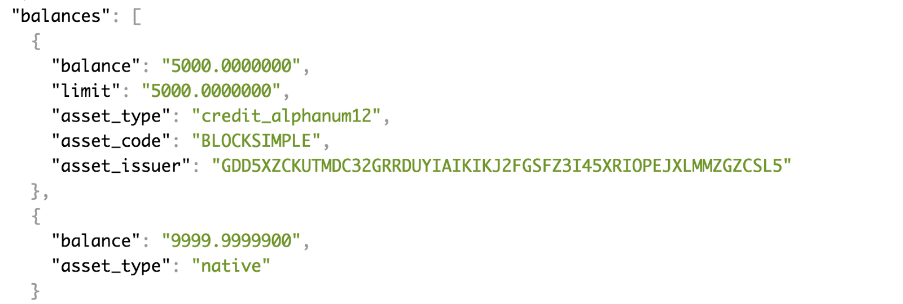

Make a custom token¶
Foreword¶
In this article I’ll show you how to issue a token I’m going to call “BLOCKSIMPLE”.
Here are the steps involved:
- Step 1: Create 2 accounts (One for Issuance, another for Distribution).
- Step 2: Execute a change of trust transaction from Distribution to Issuance.
- Step 3: Create the token.
Step 1: Create 2 accounts¶
You will need TWO (2) accounts. One to act as the issuer and one to act as the distributor account.
Create two and save them to your local computer. Make sure you clearly label somehow one as issuer and one as distributor. For me, I saved the data as “issuer-test-account-Stellar.txt” and “distributor-test-account-Stellar.txt”.
Using the testnet faucet and fund both accounts with RIA. Make sure that the slider in the top right is set to “test”.
Go to Create an account for more details.
Step 2: Change the trust between the two accounts.¶
For us to issue the token, we need to issue a change trust transaction between the distribution account and the issuance account. You can do that through this handy web interface.
Using the accounts you have created, change trust using the distribution account aimed at the issuing account:
Submit this using your private key
And you’ll come to this final screen:
If all goes well, you’ll see a JSON response similar to above.
Step 3: Creating the Actual Token¶
This step is not intuitive: the token creation is done by sending a payment from the issuing account to the distribution account, denominated in the new token. This is why we had to change trust to begin with — the distribution account issued a statement of trust that this “BLOCKSIMPLE” thing was the real deal.
Go to Transaction Builder, this is what that operation looks like:
If all goes well, you’ll see a successful transaction like so:
Ok, so now we have issued 5000 BLOCKSIMPLE tokens on the test net. Woohoo!
Congratulations! You just issued your first ever custom token!
Source: https://hackernoon.com/how-to-make-a-custom-token-on-stellar-ae5296512a2e